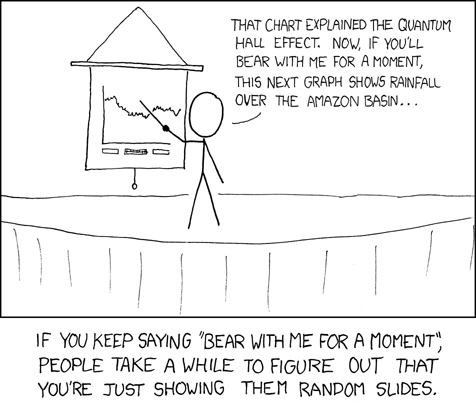
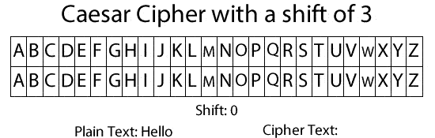
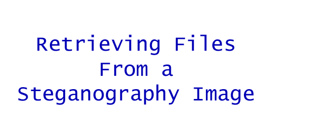
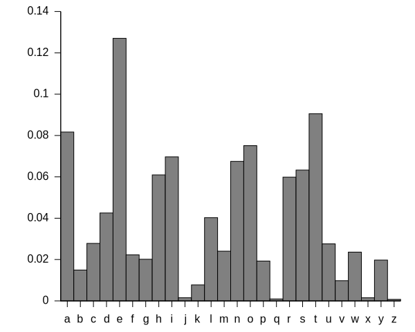
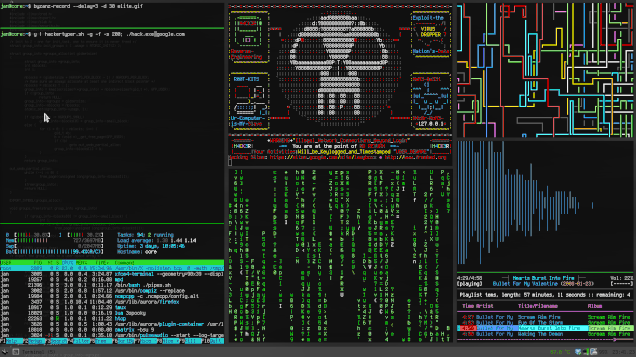
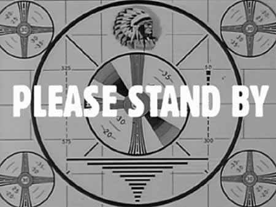
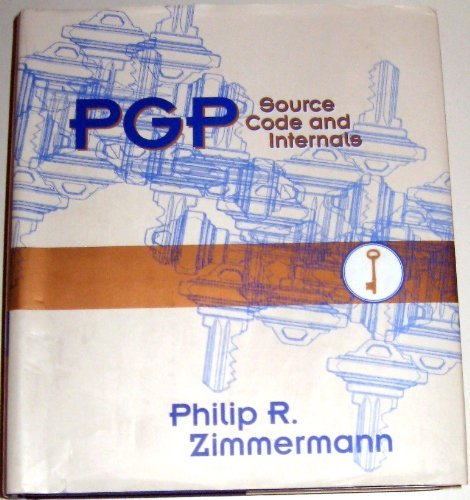
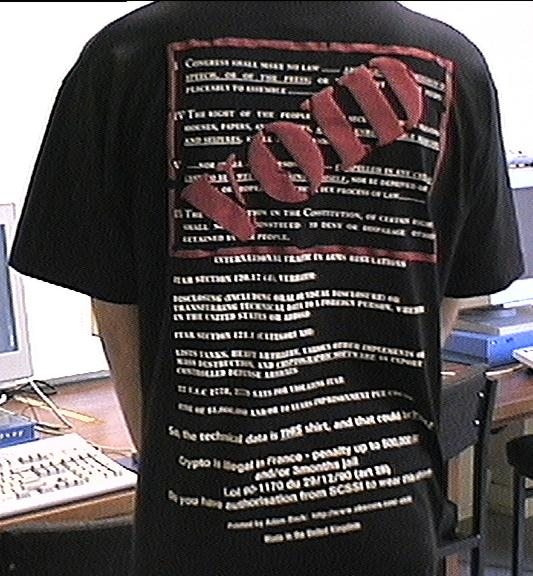
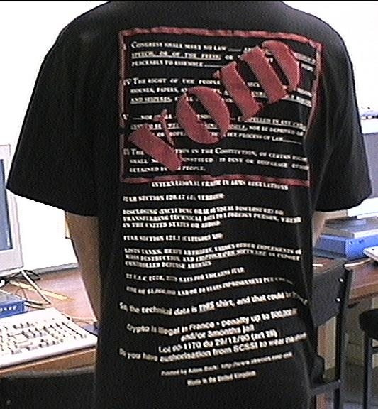

Welcome **I know this is the last presentation of the day, I will try and make it painless
- Very Important Topic
Who am I?
Tom
Program: Computer Programming
Questions
Please feel free to ask me a question at any point
 Source: XKCD #365Encryption in Society
Viewable at: https://tlherr.github.io/EncryptionPresentation
Code available: https://github.com/tlherr/EncryptionPresentation
- What is it?
- Where does it come from?
- What role does it play in society?
- Why is it needed?
- Should it be allowed?
What is
Encryption?
- Probably thinking of CSI style hacking green text
- We view it as strictly digital, it is much broader
- Anyone think they could define it for us?
to change information from one form to another especially to hide its meaning
Merriam-Webster DictionaryYou have probably already used it without knowing
- Or it has become such an integrated part of your daily life you do not even notice it
- Debit/Credit Cards
- Cellular Networks
- VPNs (Remote Workers)
- WiFi Security
- Financial Transactions (eCommerce, online banking) (SSL)
- Just a few examples
- Encryption allows us to do all these things with the confidence our information is secure
You even used it as a child
- Pig Latin
History of Encryption
- We like to think it is very new
- Anyone like to hazard a guess how long humans have been doing this?
- About 4000 years
Egyptian Hieroglphys (1900 BC)

~4000 Years Ago
- Not specifically intended for hiding information
- More visually expressive way of story telling
- Great at the time for illiterate people
- Would not be fully understood until around 1820s
Roman (Caesar Cipher 50 BC)
- Named after the Roman leader who used it in his private communications
- Functions by shifting letters in the alphabet and substituing those letters to encode message
Greek (Steganography 440 BC)
- Practice of hiding information inside other seemingly mundane information
- Messages shaved into runners heads, wax on boards
Arabic (Frequency Analysis 800s)
- One of the earliest forms of crypotgraphic analysis, used to break codes
Is Encryption too Dangerous?
- There is lots of controvercy surrounding encryption
- Some countries have tried to make its use illegal (France relaxed in 2004 is a noteable example)
Terrorism
Child Pornography
Espionage/Treason
- Unfortunatly some of the terrible things encryption could be used to help conceal
Going Dark
- The idea of going dark is that if everyone used strong encryption law enforcement would be left in the dark
- Without access to unencrypted communications would be unable to protect public
- In Reality there are many legal traditional investigative methods the continue to function
- Warrants can still be used to compel the decryption of information when a crime has been suspected
- Those of you who believe that 5th ammendement (right not to self incriminate) would cover this would be incorrect
Could it be stopped?

 

Can't make it go away
It can be good and bad
What about a compromise?
Backdoors sound great, lets just do that!
The Human Need for Privacy